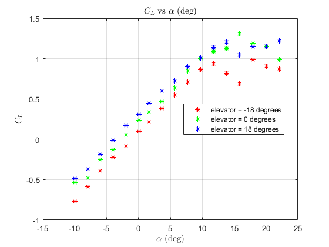
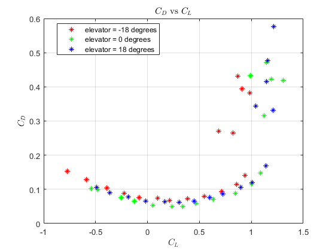

Contents
Wind Tunnel Lab Sanity Check
Created 6 Feb 2023, AEM 4303W Updated 16 Mar 2023 Trevor Burgoyne
% From CRT_data_parser.m, we generate a .mat file with the following data: % Column 1: Row number % Column 2: Angle of attack (deg) % Column 3: Elevator deflection (deg) % Column 4: Rudder deflection (rad) % Column 5: Air density (kg/m^3) % Column 6: Air speed (m/s) % Column 7: Normal force (N) % Column 8: Standard deviation of normal force (N) % Column 9: Transverse force (N), % Column 10: Standard deviation of transverse force (N) % Column 11: Axial force (N), "X" % Column 12: Standard deviation of axial force (N) % Column 13: Normal Moment (N-m) % Column 14: Standard deviation of normal moment (N-m) % Column 15: Transverse moment (N-m) % Column 16: Standard deviation of transverse moment (N-m) % Column 17: Axial moment (N-m) % Column 18: Standard deviation of axial moment (N-m) % Hard code actual filename load("./CRT_data_2023_2_6_11_53.mat"); % 51 rows, 18 col data = data_matrix; % name of big table when loaded from the .mat file % Get all elevator deflections d = data(:,3); % Elevator deflection (deg) % Only include rows where d == 0 deflections = [-18, 0, 18]; colors = ["r", "g", "b"]; for i=1:length(deflections) data = data_matrix(find(d==deflections(i)),:); % Label data for clarity a = data(:,2); % AoA (deg) rho = data(:,5); % Density (kg/m^3) v = data(:,6); % Air speed (m/s) Z = -data(:,7); % Normal Force (N) X = -data(:,11); % Axial Force (N) M_n = data(:,13); % Normal moment (N*m) M_t = data(:,15); % Traverse moment (N*m) % Ms (sting moments) is the sum of normal and traverse moments Ms = M_n + M_t; % (N*m) % Given values: c = .2129; % chord (m) b_le = .9; % Leading edge span (m) b_te = .985; % Trailing edge span (m) S = .5*c*(b_le + b_te); % Wing area (m^2) x_cg = .016; % x location of center of gravity (m) z_cg = .05; % z location of center of gravity (m) % We want: CL vs a, CL vs CD, and CM vs a % First, we calculate L, D, M, and q (dynamic pressure) for each alpha. L = X.*sind(a) - Z.*cosd(a); % Lift D = -X.*cosd(a) - Z.*sind(a); % Drag M = Ms + z_cg*X + x_cg*Z; % Moment q = .5*rho.*(v.^2); % Dynamic pressure (Pa) % Next, Calculate non-dimensional coefficients CL = L./(q*S); % Coefficient of Lift CD = D./(q*S); % Coefficient of Drag CM = M./(q*S*c); % Moment Coefficient % Graphs figure(1) % CL vs a plot(a, CL, "*", "Color",colors(i), "DisplayName","elevator = " + deflections(i) + " degrees") title("$C_L$ vs $\alpha$ (deg)","Interpreter","latex");xlabel("$\alpha$ (deg)","Interpreter","latex");ylabel("$C_L$","Interpreter","latex"); legend('show','location','best'); hold on; grid on; figure(2) % CD vs a plot(a, CD, "*","Color",colors(i), "DisplayName","elevator = " + deflections(i) + " degrees") title("$C_D$ vs $\alpha$ (deg)","Interpreter","latex");xlabel("$\alpha$ (deg)","Interpreter","latex");ylabel("$C_D$","Interpreter","latex"); legend('show','location','best'); hold on; grid on; figure(3) % CM vs a plot(a, CM, "*","Color",colors(i), "DisplayName","elevator = " + deflections(i) + " degrees") title("$C_M$ vs $\alpha$ (deg)","Interpreter","latex");xlabel("$\alpha$ (deg)","Interpreter","latex");ylabel("$C_M$","Interpreter","latex"); legend('show','location','best'); hold on; grid on; figure(4) % CD vs CL plot(CL, CD, "*","Color",colors(i), "DisplayName","elevator = " + deflections(i) + " degrees") title("$C_D$ vs $C_L$","Interpreter","latex");xlabel("$C_L$","Interpreter","latex");ylabel("$C_D$","Interpreter","latex"); legend('show','location','best'); hold on; grid on; figure(5) % CM vs CL plot(CL, CM, "*","Color",colors(i), "DisplayName","elevator = " + deflections(i) + " degrees") title("$C_M$ vs $C_L$","Interpreter","latex");xlabel("$C_L$","Interpreter","latex");ylabel("$C_M$","Interpreter","latex"); legend('show','location','best'); hold on; grid on; % FASER given properties Sw = 8.28; % ft^2, wing area l = 4.31; % ft, length of fuselage c = 1.42; % ft, mean geometric chord cg = 0.25; % normalized x location of the center of gravity % conversion sqft2sqm = .092903; % m^2 per ft^2 % do a linear fit range = 6:length(CL); % linear regime p = polyfit(CL(range), CM(range), 1); slope_test = p(1); % slope CM_0 = p(2); % intercept np = cg - slope_test; % neutral point CL_max = max(CL(range)); % Max CL for this deflection slope = CM_0/-CL_max; % theoretical slope for trim at CL_max if deflections(i) == -18 w_forward = mean(q)*CL_max*(sqft2sqm*Sw); % N, max weight cg_forward = np + slope; elseif deflections(i) == 0 CL_max_0 = CL_max; % save for later elseif deflections(i) == 18 if CM_0 < 0 cg_aft = np; % There must exist some deflection where CM_0 = 0 else cg_aft = np + slope; end % Use CL_max at 0 deflection since CM_0 at 0 delections ~= 0 w_aft = mean(q)*CL_max_0*(sqft2sqm*Sw); end end 
HW 3 Q2: SM from wind tunnel data
% Find the forward/aft limits of the center of gravity of FASER. np % neutral point cg_aft % Aft limit == neutral point (there exists a deflection such that CM_0=0 since CM_0 for 18 degrees is negative) w_aft % max weight (N) at aft limit cg_forward % forward limit at -18 degrees w_forward % max weight (N) at forward limit % Find the max weight when flying at the forward/aft limits.
np =
0.4601
cg_aft =
0.4601
w_aft =
35.1381
cg_forward =
0.1611
w_forward =
30.3218